За какво са ни нужни шаблоните?
Използването на шаблони не е ново в разработката на сайтове. Всъщност от
много време съществуват шаблонни езици, които се занимават със сървърната част
на сайтовете, например: Django (Python), ERB/Haml (Ruby) и Smarty (PHP). В
последните няколко години се наблюдава експлозия от нови framework-ове, които
използват сходна механика за представяне на техния изглед, а именно шаблони.
Нека разгледаме дефиницията на шаблон. Шаблонът е документ или файл, който
има предварително зададен формат и се използва като стартова точка в частите от
документа, в които ни е нужен, така че форматът да не се създава всеки път, когато
се използва.
„...да не се създава всеки път, когато се използва“. За вас не знам, но аз обожавам
да си спестявам допълнителната работа. Защо тогава толкова дълго време не е
съществувала поддръжка за нещо, което очевидно е толкова удобно за
програмистите? Е, вече има решение на този проблем! WhatWG HTML templates
спецификацията е отговорът на молитвите ни. Тя дефинира нов <template> елемент,
който дефинира стандартен подход базиран на DOM дървото за създаване на
шаблони в клиентската част на сайта. Шаблоните позволяват на програмиста да
декларира фрагменти, които биват анализирани като HTML, който не се
визуализира, не зарежда снимки и видеа или в общи линии не се използва докато
не бъде инстанциран по време на работа.
„They're a place to put a big wad of HTML that you don't want the browser to mess with
at all...for any reason.“ – Rafael Weinstein
Как да използваме <template> елемента?
1. Съвместимост
За да използваме <template> елемента първо трябва видим дали съществува
поддръжка от браузъра за този елемент. Това се проверява като създадем DOM
елемент и проверим дали .content свойството съществува:
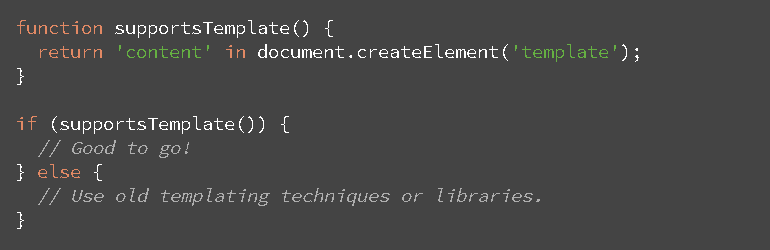
Ако браузерът не поддържа <template> елемента, използваме стари техники и
библиотеки за справяне с проблема (чиито минуси са описани по-долу).
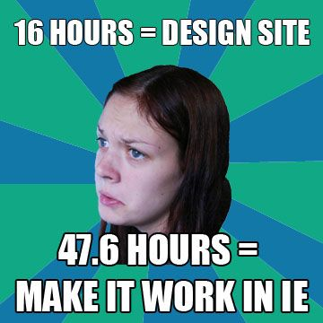
2. Деклариране на съдържанието на шаблона
HTML елементът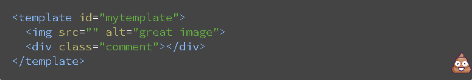<template>представя шаблон в документа. Той съдържа „template contents” – поделементи, които по същество са бездейни парчета от клонируем DOM. За създаването на съдържание на шаблона, просто се декларира някаква структура, която се загражда в<template>елемента:
Може би забелязвате празната картинка. Липсата на съдържание в src би трябвало да „счупи“ img елемента и браузърът да се скара с грешка 404 или грешки в конзолата. Това обаче няма да се случи, защото използваме шаблон, а не трябва да забравяме, че съдържанието не се зарежда, освен ако не е активиран шаблонът. Можем в последствие да генерираме динамично източник за снимката.
С какво всъщност <template> елементът помага на съдържанието?
Заграждането на информация в <template> елемента ни дава няколко важни
свойства:
1. Съдържанието е бездейно докато не се активира. Това значи, че тази
част от кода играе ролята на скрит DOM, който не се интерпретира от
браузъра.
2. Всякакво съдържание в шаблона не се изпълнява – скриптовете не се
пускат, снимките и видеата не се зареждат (докато шаблонът не се
активира).
3. Съдържанието се смята, че не е част от документа.
Използването на document.getElementById(‘template’) или
querySelector(‘#template’) в основната страница няма да върне възлите
на децата на шаблона.
4. Шаблоните могат да бъдат поставяни навсякъде в <head>, <body> или
<frameset> елементите и могат да съдържат всякакъв тип
съдържание, което е позволено в съответния елемент. <template>
елементът може също така да бъде дете на <table> или <select>:
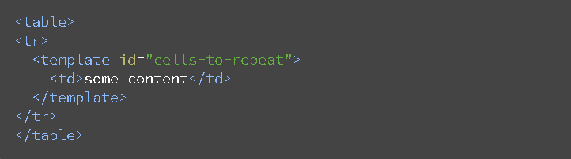
3. Активиране на шаблона
За да се използва един шаблон, той трябва да бъде активиран. В противен
случай съдържанието му никога няма да се интерпетира от браузъра. Най-простият
начин това да се направи е посредством създаването на дълбоко копие на
съдържанието му (.content), използвайки document.importNode(). Свойството .content е
фрагмент от документа, който съдържа същността на шаблона и може единствено да
се чете.
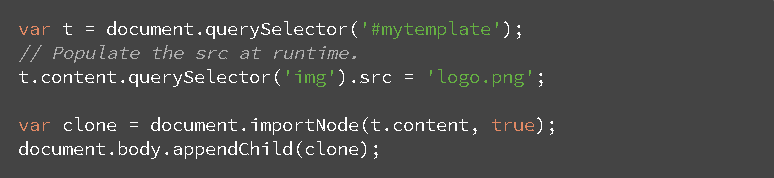
След запечатването на шаблона, съдържанието му се интерпретира – може да се види в DOM, снимките и видеата се зареждат и прочие. В този пример съдържанието е клонирано, зададен е път за изображението и финалният вид на съдържанието е закачено за body елемента. Може да се използва document.parentNode.appendChild(clone), което ще закачи съдържанието за бащиния елемент на шаблона.
Няколко интересни тънкости
1. Шаблонът няма как да се пусне предварително, тоест не може да се заредят
предварително медии, да се обработи JavaScript, да се вземе допълнителен CSS
и т.н. Това се отнася както за сървърната част, така и за частта за клиента.
Единственото време, в което се зарежда шаблонът е когато се активира.
2. Трябва да се внимава с вложени шаблони. Например:
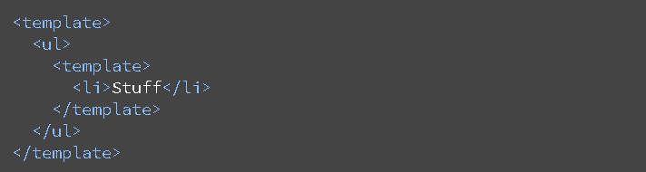
Активирането на външния шаблон няма да активира вътрешните шаблони.
Тоест ако имаме влагане на шаблони, задължително трябва всички шаблони
да се активират поотделно.
Други методи за създаване на шаблони
Да не забравяме все пак откъде сме дошли. Пътят към стандатизирането на шаблони в
HTML е много дълъг. През годините са измислени много умни трикове за създаването
на преизползваеми шаблони. Ще видите два от най-често срещаните методи за
създаване на шаблони заедно с предимствата и недостатъците им.
1. Първият метод е използването на [hidden] или display:none, които създават
"невидим" DOM.
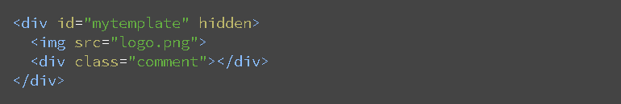
Въпреки че тази техника върши работа, има няколко недостатъка. Кратък
анализ на техниката:
а. + работи се директно с DOM
b. + нищо не се интерпретира - добавянето на hidden забранява на
блока да се показва
c. - въпреки че е скрито, ресурсите се зареждат(снимки, видеа и т.н.)
d. - стилизирането е много трудно. Ако се вгради съответният шаблон в
чужда страница, не е сигурно дали не съществува вече елемент със
същото id
2. Вторият метод е манипулиране на string-ове посредством <script> тага
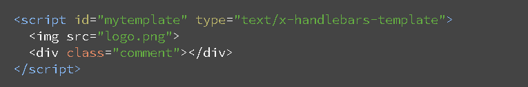
Анализ на тази техника:
a. + нищо не се интерпретира, защото <script> е display:none по
подразбиране
b. + бездеен (браузърът не анализира съдържанието), защото типът на
script елемента е нещо различно от text/javascript
c. – парсване на стрингове по време на работа
d. – достъп на html в страницата -> удобно за атаки
Примери
Нека искаме да създадем секция със съдържание, копирано няколко пъти. Единият начин да направим
това е просто чрез копиране:
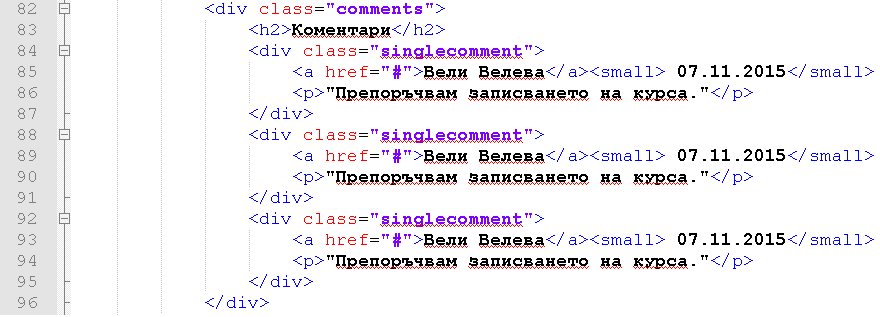
Това обаче е ненужно копиране директно в HTML документа, което може да се спести и да се
олекоти работата на браузъра посредством използването на шаблони.
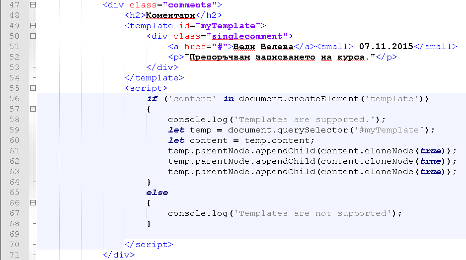
В else клаузата може да използваме някой от методите описани в
"Други методи за създаване на шаблони".
Шаблоните също така могат да се използват за предотвратяване зареждането на ненужни за нас в
момента елементи. Например ако имаме таблица, която е празна и не искаме да се показва, освен ако
не получим информация за записите в нея, можем да използваме шаблони. (може в JS кода да приемаме
информацията от база данни в сървърната част на сайта)
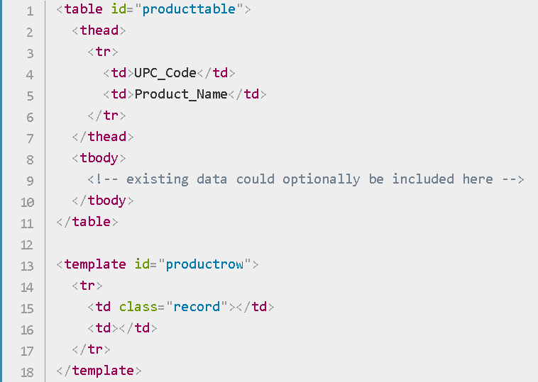
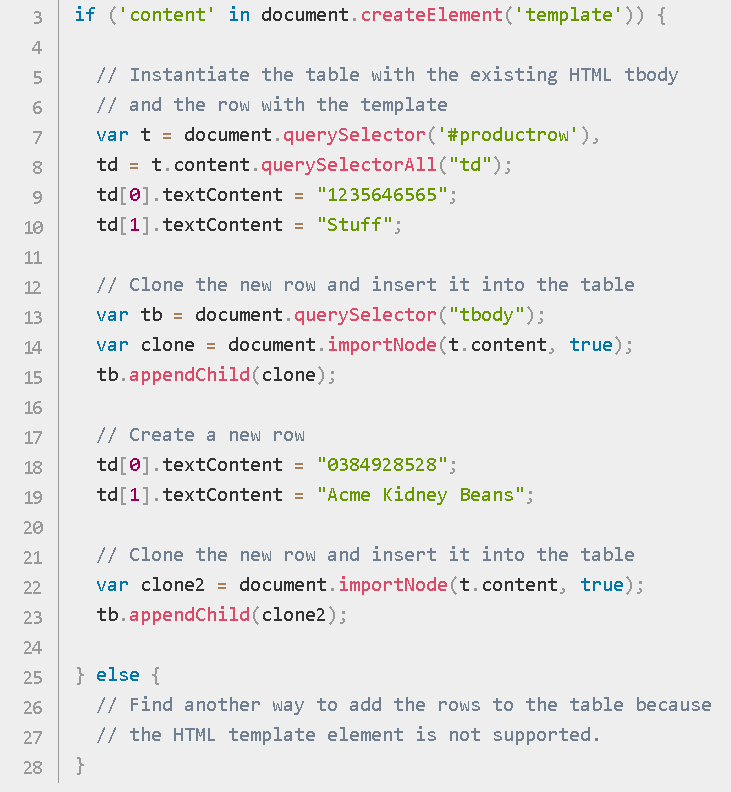
Източници
http://www.html5rocks.com/en/tutorials/webcomponents/template/ - "HTML's New Template Tag", Eric Bidelman
https://developer.mozilla.org/en-US/docs/Web/HTML/Element/template - "<template>", MDN Web Docs
https://www.w3schools.com/tags/tag_template.asp - "HTML <template> Tag", W3Schools
http://blog.teamtreehouse.com/creating-reusable-markup-with-the-html-template-element - "Creating Reusable Markup with The HTML Template Element", Matt West
https://developer.mozilla.org/en-US/docs/Web/HTML/Element/template - "<template>", MDN Web Docs
https://www.w3schools.com/tags/tag_template.asp - "HTML <template> Tag", W3Schools
http://blog.teamtreehouse.com/creating-reusable-markup-with-the-html-template-element - "Creating Reusable Markup with The HTML Template Element", Matt West